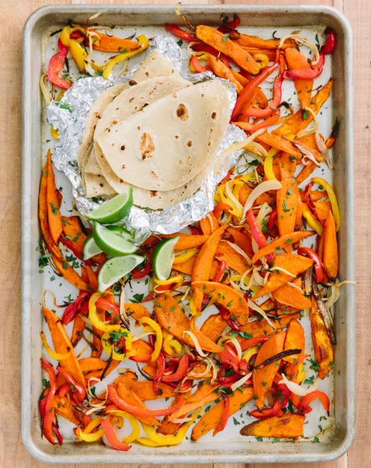

Sweet Potato Sheetpan Fajitas Recipe

These fajitas have roasted sweet potatoes seasoned with cumin and smoked paprika. Stuff them into tortillas and drizzle with a tangy crema.
fajitas have the fun choose-your-own-adventure nature of tacos, with the added appeal of cooking things on one sizzling-hot platter. Too many vegetarian fajitas just skip the meat and cook onions and peppers together, but these fajitas do more, adding roasted sweet potato slices dusted in cumin and smoked paprika to the colorful mix.
Fajitas Ingredients
-
2 tablespoons olive oil
-
1 clove garlic, minced
-
1 teaspoon kosher salt
-
1/2 teaspoon ground cumin
-
1/2 teaspoon smoked paprika
-
2 pinches ground cayenne pepper
-
1 large sweet potato (about 1 pound)
-
8 to 10 small flour or corn tortillas
-
2 medium bell peppers
-
1 medium sweet or yellow onion
Sauce Ingredients
-
1 cup plain Greek yogurt
-
Finely grated zest of 1 medium lime
-
Juice of 1 medium lime, divided
-
Kosher salt
-
Salsa, guacamole, lime wedges (optional)
Directions
-
Make the fajitas: Arrange 1 rack in the middle of the oven and 1 rack below it, then heat to 475°F. Stir the oil, garlic, salt, cumin, paprika, and cayenne together in a small bowl. Transfer 2 teaspoons of it to a large bowl and set both aside.
-
Peel the sweet potato and cut it in half crosswise. Cut the pieces lengthwise into 1/2-inch-wide slices. Cut the slices lengthwise into 1/2-inch-wide planks or batons (they should look a bit like steak fries). Place the planks in the large bowl and toss to coat in the spiced oil. Transfer to a rimmed baking sheet and spread into an even layer (save the bowl; no need to wash it). Roast on the middle rack for 10 minutes. Meanwhile, prep the tortillas and vegetables.
-
Stack the tortillas on a large sheet of aluminum foil and wrap completely in the foil; set aside. Core, seed, thinly slice the bell peppers, and add to the now-empty sweet potato bowl. Thinly slice the onion and add to the bowl. Drizzle with the reserved remaining spiced oil and toss to combine.
-
Carefully remove the hot baking sheet from the oven, flip the sweet potatoes, and then push them to one half of the baking sheet. Add the bell peppers and onions to the other half of the baking sheet and spread into an even layer. Place the baking sheet back on the middle rack and place the foil-wrapped tortillas on the lower rack. Roast until sweet potatoes are tender, 12 to 15 minutes more. Meanwhile, make the crema.
-
Make the crema: Place the yogurt, lime zest, and 2 teaspoons of the lime juice in a small bowl, season with salt, and stir to combine.
-
When the vegetables are ready, drizzle with the remaining lime juice, toss to combine, and transfer to a serving bowl. Serve with the warmed tortillas, lime crema, and toppings.